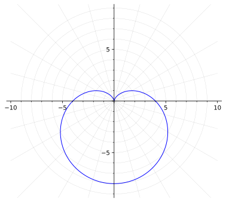

1.
Sketch the graph of \(r=4-4\sin\theta\) and find the area of the region enclosed by it.
Solution.
Below is the graph of the polar curve.

Notice tha the curve has symmetry about the rectangular \(x\)-axis. Therefore, to calculate the area, the left or right area is sufficient and then can be multiplied by two. To find the angle for which the curve is at the lower apex and the cusp of the graph, the equations \(4-4\sin\theta=0\) and \(4-4\sin\theta=8\) need to be solved.
The resulting angles obtained from solving these equations are \(\theta=\pi/2\) and \(\theta=-\pi/2\text{.}\) It is important to notice that the use of the angle \(\theta=3\pi/2\) in this case is avoided because of the clockwise way in which the graph of the polar curve is traveling.
Therefore, the integral that calculates the total area would be
\begin{align*}
A &= 2\cdot\frac{1}{2}\int_{-\pi/2}^{\pi/2}\left(4-4\sin\theta\right)^2\,d\theta\\
\amp = \int_{-\pi/2}^{\pi/2}\left(4-4\sin\theta\right)^2 \, d\theta \\
\amp = 16\int_{-\pi/2}^{\pi/2}\left(1-\sin\theta\right)^2 \, d\theta\\
\amp = 16\int_{-\pi/2}^{\pi/2}\left(1-2\sin\theta+\sin^2\theta\right) \, d\theta
\end{align*}